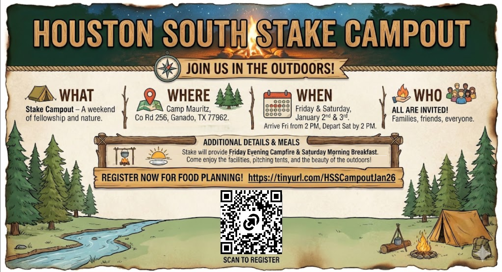
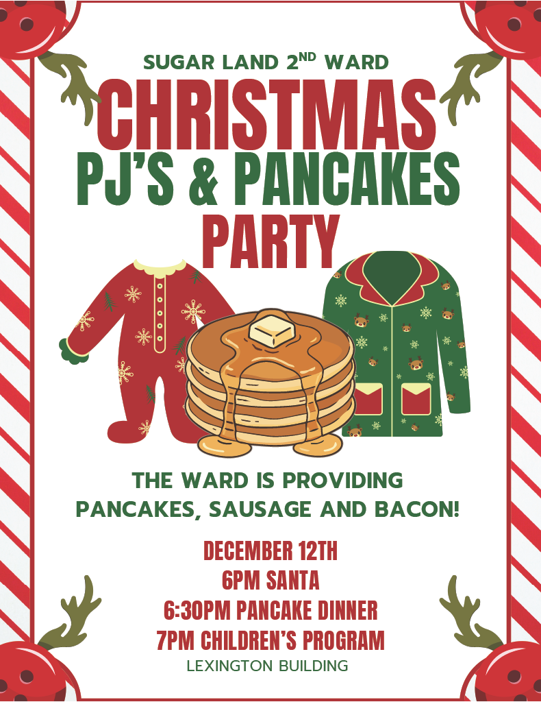
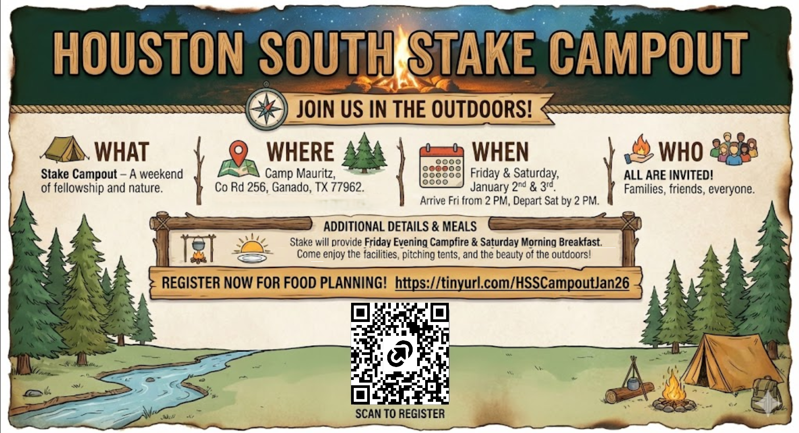
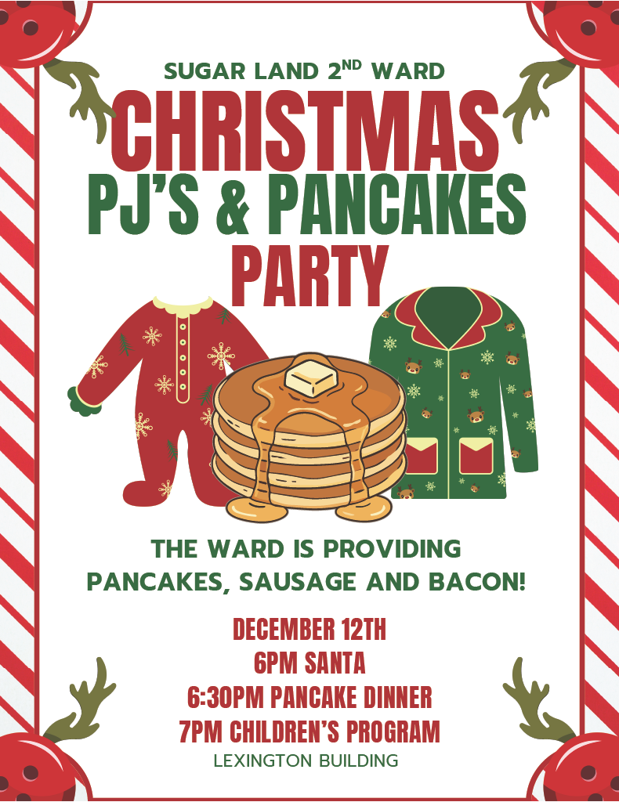

Sugar Land 2nd Ward
Houston Texas South Stake Conference
December 7th

Houston Texas South Stake Conference
December 7th
All members of Stake and Ward Councils and their presidencies, secretaries, and clerks are invited to attend.
This includes: Bishoprics; Elders quorum presidencies; Aaronic Priesthood quorum and Young Women class advisers; Relief Society, Young Women, Primary and Sunday School presidencies, and secretaries.
In-person at Lexington
All adults.
In-person at Lexington
In-person at Lexington. Via Zoom at Sienna and Rosenberg buildings
Our ministry is a ministry of all the children of God on the face of the earth. We pray for all. We seek to serve all. And we invoke the blessings of the Lord Jesus Christ upon all who seek to serve Him, to do so in worthiness and commitment and optimism. We do not have the answers to all the world’s problems. They have not been revealed. But what we do know is that we are all children of heavenly parents, and that we are called to serve all of the children of God.
- President Dallin H. Oaks
Fast Sunday for december will be observed on November 30
The sister missionaries have a new phone number: 346-901-8717
Volleyball Wednesdays - Come join us on Wednesdays at 9PM and have fun!!!
Send announcements to bvl2clerk@gmail.com

 



06 December 2025 Leavitt, B&C; Markwalter, V&W; Martin, C&G, Thibault, D, Moore, M&D
13 December 2025 Ozomah, C&R; Powell, J&D, Quam, E&D, Scott, J&C
20 December 2025 Rasmussen, C&C; Rellaford, M&M; Robinson, S&K, Roskelley, C&C, Ramirez, L
Check link section for how-to-videos
Book a tithing declaration interview
Sign up for the ward Christmas party
See and share the ward Christmas party from the public web page
See the entire building cleaning schedule
See how to service soap dispensers
See how to refill paper towel dispensers
See how to replace toilet paper rolls
Get started with Temple and Family History work
Sign up to feed the missionaries